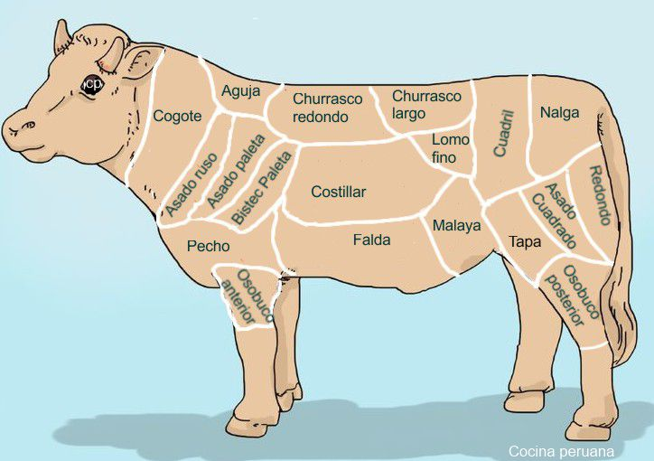
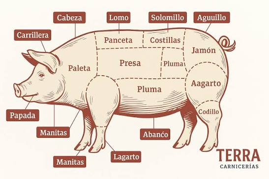
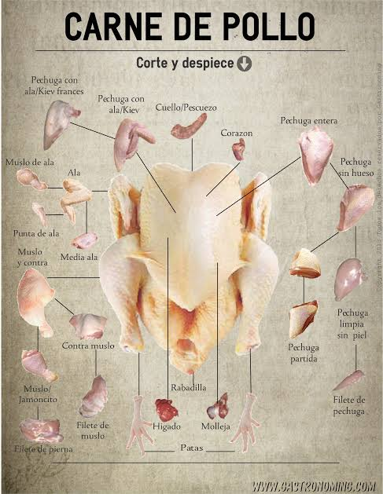

Cortes frescos de res, cerdo y pollo, preparados cada mañana y atendidos con el trato de siempre.

La Carnicería María Paula es un conocido negocio familiar en Paraguay que comenzó con un pequeño local y creció hasta consolidarse en el Abasto Norte (ubicado en Limpio)
La carnicería María Paula, que de contar con un solo local pasó a cinco en el Abasto Norte, registra una venta diaria actual de 1.500 kilogramos de cortes de costilla, mencionó su propietario, Marcelo Vanderlei, quien destacó el considerable aumento de pedidos de cortes cárnicos en los últimos días

Asado, costilla, lomo, vacío y carne molida.

Bondiola, costeletas y panceta.

Pollo entero, pechuga, muslos y alitas.
Chorizos y morcillas elaborados en el día.
Teléfono: +5958732962
Horario: De 6:00 a 15:00
Ubicacion: